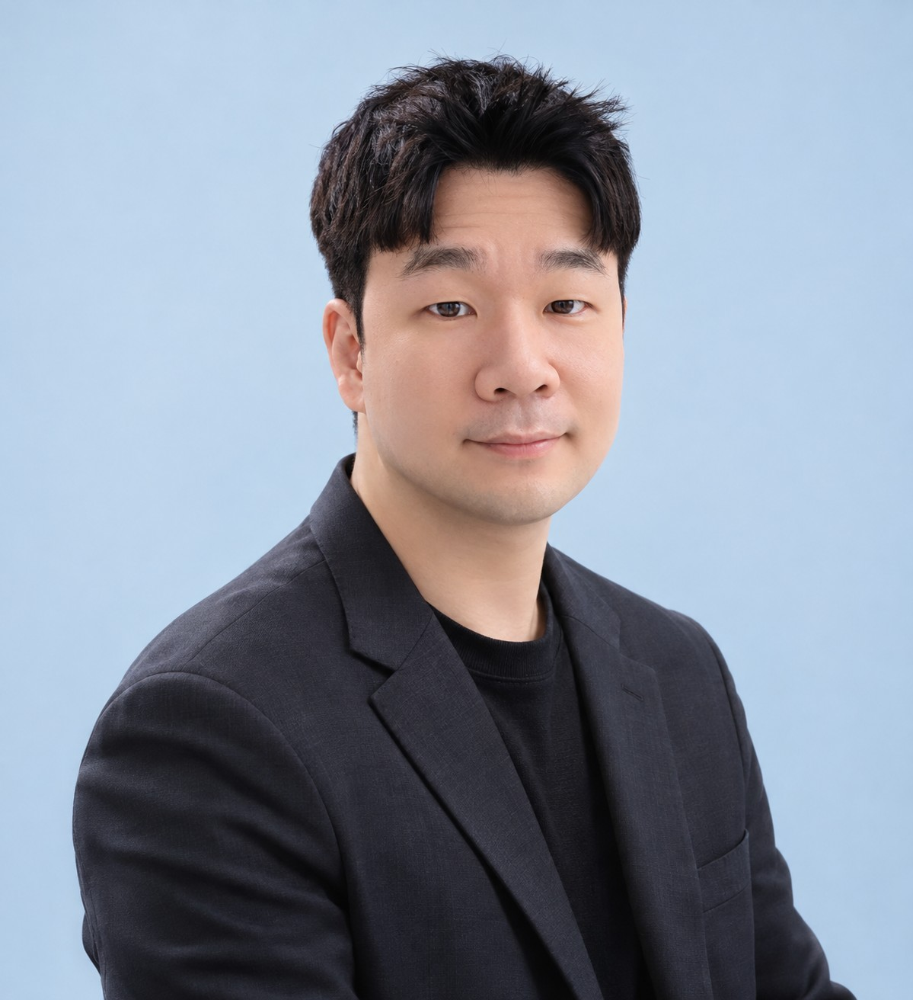
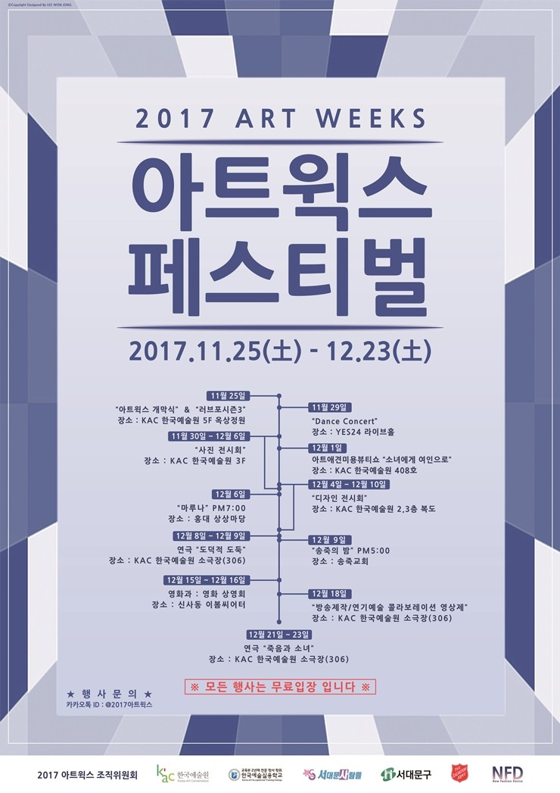
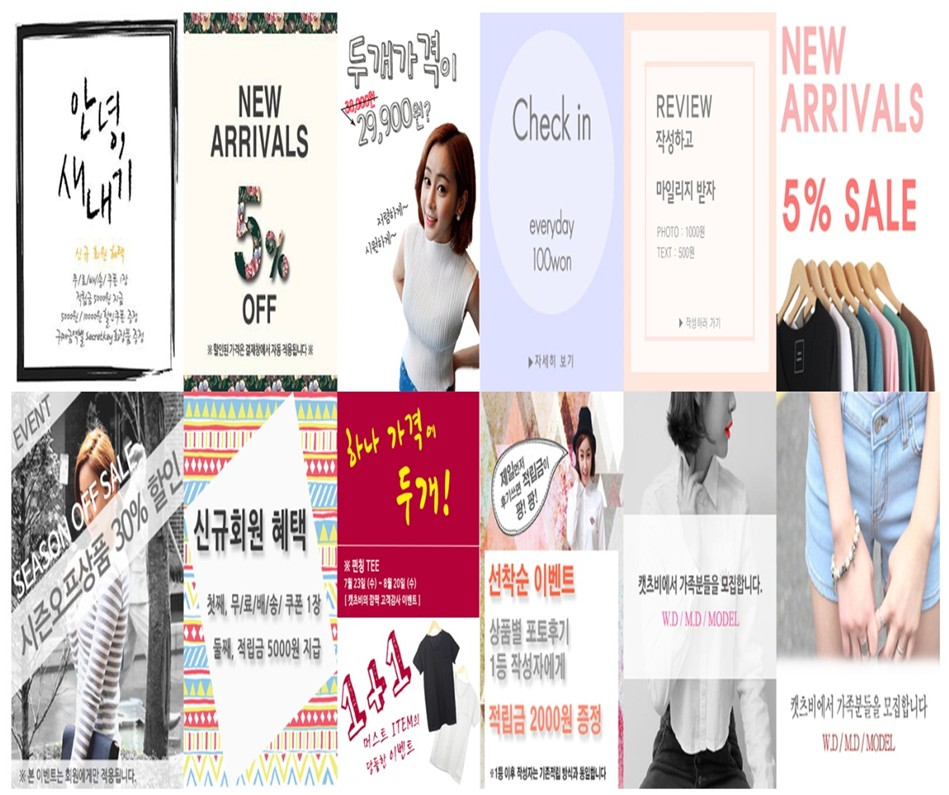
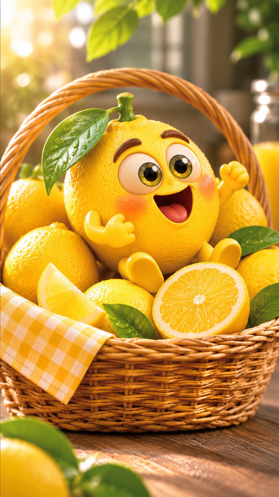

물 마시기 습관
레몬수를 일상 루틴에 배치한 홀베리 숏폼.
홈쇼핑 방송을 운영하며, 상품의 특징을 숏폼 영상과 디자인으로 풀어냅니다. 뮤지컬 무대와 웹디자인에서 시작해 방송과 콘텐츠 제작으로 이어진 작업을 모았습니다.
영상 작업 보기 ↓
생활 속 상황과 제품을 연결하고, 콘티·생성형 AI 컷·음향·음성·편집으로 장면을 완성합니다.
레몬수를 일상 루틴에 배치한 홀베리 숏폼.
레몬 손질의 번거로움을 캐릭터 상황극으로 풀어낸 영상.
크리스마스 테마의 레몬즙 영상.
음료 습관을 소재로 잡은 숏폼 작업본.
수정 중인 영상 작업본.
날짜로 분류된 영상 작업 파일.

행사 일시와 공간을 전하는 포스터

신상품과 이벤트 혜택을 알리는 배너

상품과 기획 콘텐츠를 배치한 메인 화면

손질 과정의 번거로움을 캐릭터가 겪는 상황으로 잡고, 콘티 단계에서 화면에 담을 동작을 정했습니다.

거리에서 짧게 답하는 인터뷰 형식으로 제품 특징을 전할 수 있도록 배경과 응답 흐름을 설계했습니다.
상품 QA, 판넬·인서트 심의와 수정 요청, 상품 웹기술서 확인을 맡습니다.
게스트에게 신상품과 특이사항을 브리핑하고 샘플·원물·방송 요리를 조율합니다.
홈쇼핑사별 월간 주문·매출을 관리하고 협력사 요청과 정산을 처리합니다.
올리브유 캡슐 거리 인터뷰 · 같은 질문에 응답자별로 다른 말투와 표정을 주고, 제품 클로즈업으로 무색소 메시지를 전달하도록 기획했습니다.
레몬즙 숏폼 · 물 마시는 습관, 탄산수, 레몬 손질 등 일상에서 제품을 쓰는 장면을 중심으로 소재를 기획했습니다.
홀푸드코리아 · 2024.10–현재 · 홈쇼핑팀 매니저, 마케팅 영상 기획·제작 겸무
디자인커머스 · 2023.03 입사 · 방송 전략회의, 판넬 디자인·심의 및 현장 진행
렌팡 · 2020–2021 · 상세페이지, 이벤트 배너, 전단지와 브로셔 디자인
스마트프로덕션 · 2018–2019 · 뮤지컬 무대·영상감독. 「핑크퐁과 상어가족」 등 전국투어 참여